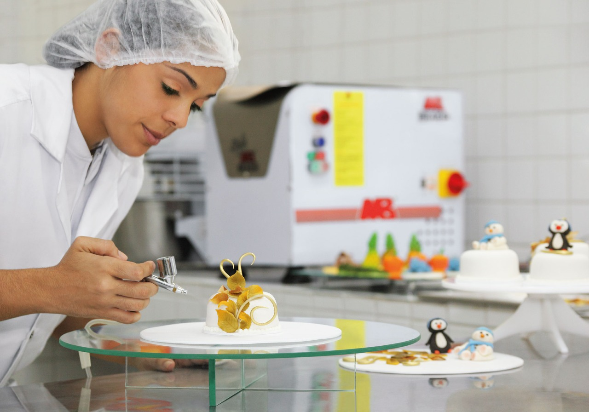

Descrição do Curso
O Curso Técnico em Alimentos Integrado ao Ensino Médio visa à formação integral do sujeito, orientando-se pelos fundamentos estéticos, políticos e éticos definidos pelos Parâmetros Curriculares Nacionais do Ensino Médio de 2000, pela Lei de Diretrizes e Bases da Educação Nacional (Lei N° 9394/96) e pela Constituição Federal de 1988.
O curso destina-se a formar profissionais habilitados para atuar no setor alimentício, com capacidade para desenvolver ações relacionadas às matérias-primas e ao processamento, armazenamento e comercialização de alimentos, de acordo com os princípios éticos, científicos, sociais e ambientais.
Perfil Profissional
O concluinte do Curso Técnico Integrado em Alimentos não apenas adquire conhecimentos técnicos, mas também é formado como um profissional-cidadão com diversas capacidades e qualidades. Espera-se que ele possua:
- Autonomia intelectual
- Consciência ambiental
- Visão crítica e atitude investigativa
- Sensibilidade social
- Habilidade de renovação do conhecimento
- Proficiência em expressão escrita e oral
- Capacidade de interação e relacionamento interpessoal
- Aptidão para trabalhar com os novos recursos de comunicação e uso das novas tecnologias
- Habilidade para trabalho coletivo e interdisciplinar
- Comprometimento ético-político na defesa de direitos
O aluno egresso é um profissional apto para:
- Atuar no processamento e análise de alimentos nas áreas de laticínios, carnes, grãos, cereais, bebidas, frutas e hortaliças
- Auxiliar e atuar na elaboração, aplicação e avaliação de programas preventivos de higienização e sanitização da produção alimentícia
- Minimizar o impacto ambiental resultante do processamento de alimentos
- Acompanhar programas de manutenção de equipamentos
- Implementar e gerenciar sistemas de controle de qualidade
- Aplicar técnicas empreendedoras para o desenvolvimento e comercialização de produtos e processos
Área de Atuação
Áreas de Atuação do Egresso
O egresso do Curso Técnico em Alimentos é um profissional que possui um robusto embasamento teórico-prático. Ele é capacitado e competente para atuar nas seguintes áreas:
- Indústria de alimentos e bebidas
- Indústria de insumos para processos e produtos
- Laboratórios de análises laboratoriais e controle de qualidade
- Instituições e órgãos de pesquisa e ensino
- Órgãos de fiscalização higiênico-sanitárias
- Consultorias
- Serviços de proteção ao consumidor
- Entrepostos de armazenamento e beneficiamento
- Serviços de alimentação
- Atuação como profissional autônomo
- Agricultura familiar
- Empreendimento próprio
Competências e Habilidades do Profissional
Competências gerais do Ensino Médio (conforme PCNEM e ENEM)
- Comunicar e representar; investigar e compreender; contextualizar social ou historicamente os conhecimentos
- Dominar diferentes linguagens, desde idiomas até representações matemáticas e artísticas
- Compreender processos, sejam eles sociais, naturais, culturais ou tecnológicos
- Diagnosticar e enfrentar problemas reais
- Construir argumentações
- Elaborar proposições solidárias
Competências gerais do Núcleo Técnico
- Dominar o processamento de alimentos de origem animal, vegetal e mineral
- Assegurar a qualidade dos alimentos
- Realizar análises físico-químicas, microbiológicas e sensoriais em alimentos
- Desenvolver novas técnicas e produtos alimentícios
- Gerenciar, tratar e valorizar resíduos da área de alimentos
- Desenvolver a comunicação específica para a área de alimentos
- Atuar na gestão da área de alimentos
- Acompanhar a instalação e manutenção de equipamentos